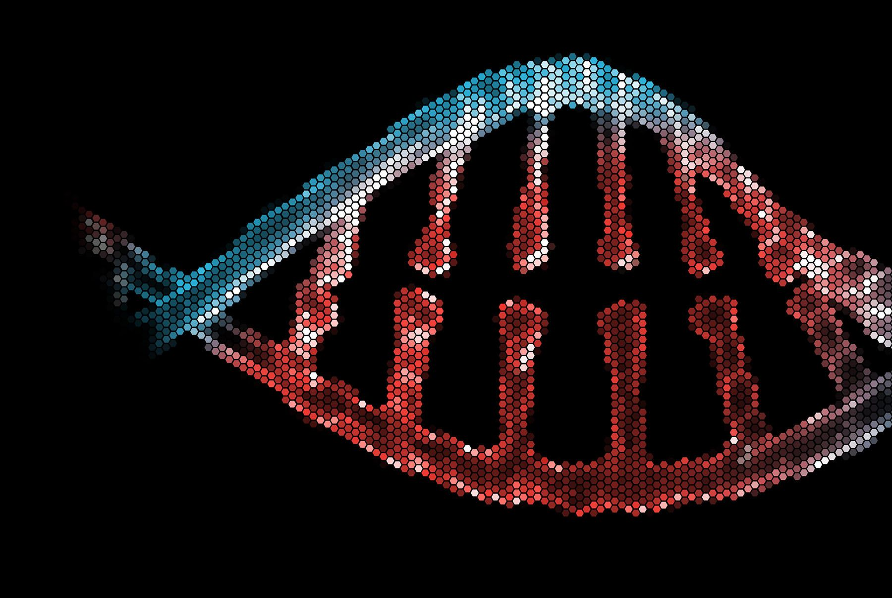

האם אנחנו עדים לרגע מהפכני במדע? כנראה שכן
פורסם במקור ב LinkedIn
האם אנחנו עדים לרגע מהפכני במדע? כנראה שכן
FutureHouse הכריזה השבוע על Robin - מערכת AI מרובת סוכנים שמצליחה לבצע תהליך שלם של גילוי מדעי (כלומר היא לא עוזרת למדענים, היא מחליפה אותם!)
מסקירת ספרות, דרך יצירת השערות ועד ניתוח תוצאות והצעות להמשך ניסוי.
💡 הניסוי הראשון שהם ביצעו איתה מהווה פריצת דרך מדעית:
המערכת זיהתה תרופה קיימת לגלאוקומה כטיפול פוטנציאלי למחלת עיניים ניוונית (dAMD)
והכל בלי שאף מדען הנחה אותה!
👥 איך זה עובד?
Crow קורא ספרות מדעית
Falcon מנתח מולקולות
Finch מפענח תוצאות ניסוי
כל זה קורה ללא מגע יד אדם
📅 ב-27 במאי הקוד יהיה פתוח לכולם.
אנחנו עומדים בפתחו של עידן חדש שבו AI לא רק כלי עזר - הוא שותף מחקר, ואולי אפילו המוביל.
לקריאה נוספת:
https://lnkd.in/d6_8PgTS
